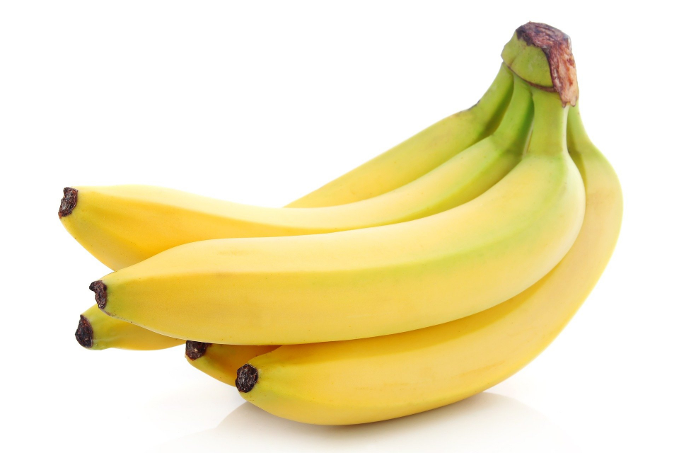

상큼한 과일 소개
우리가 자주 먹는 과일의 특징과 장점을 알아봅시다.
사과
 아삭하고 달콤한 사과
아삭하고 달콤한 사과
- 식감이 아삭하다.
- 간식으로 먹기 좋다.
- 주스나 샐러드에도 활용할 수 있다.
바나나

부드럽고 든든한 바나나
- 껍질을 벗기기 쉽다.
- 아침 식사 대용으로 좋다.
- 우유와 함께 갈아 마시기 좋다.
과일 먹는 순서 예시
- 과일을 깨끗하게 씻는다.
- 먹기 좋은 크기로 자른다.
- 접시에 담는다.
- 가족이나 친구와 함께 먹는다.
과일 용어 정리
- 과육
- 과일에서 먹을 수 있는 부드러운 부분을 말한다.
- 껍질
- 과일의 겉부분을 감싸고 있는 부분을 말한다.
- 씨
- 과일 안에 들어있는 단단한 알갱이를 말한다.